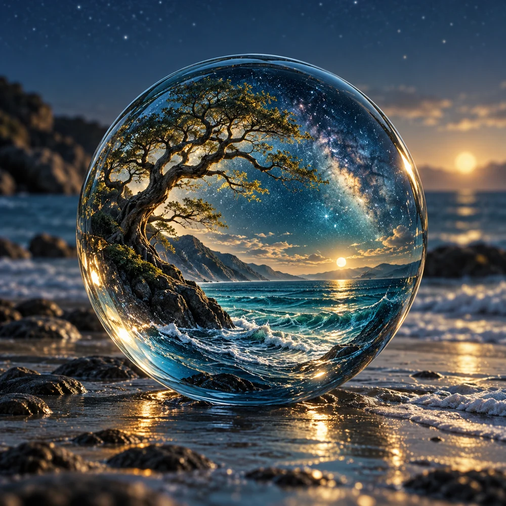
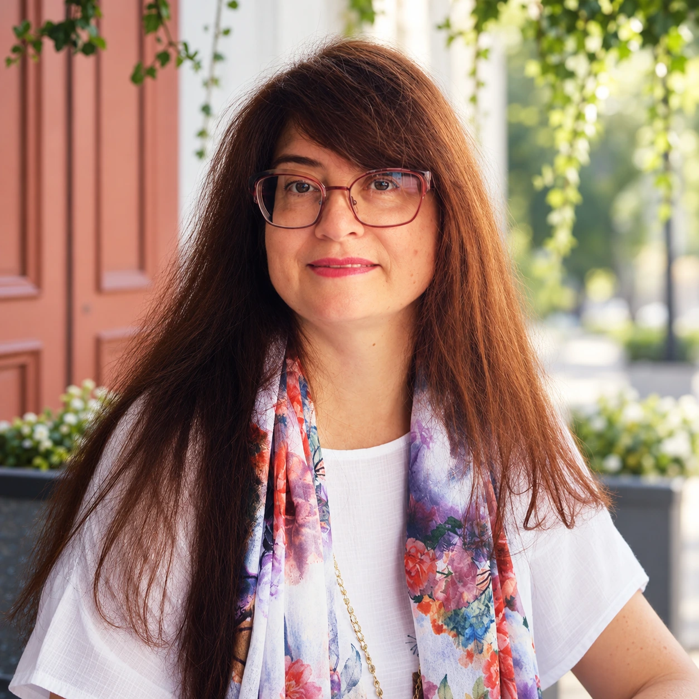
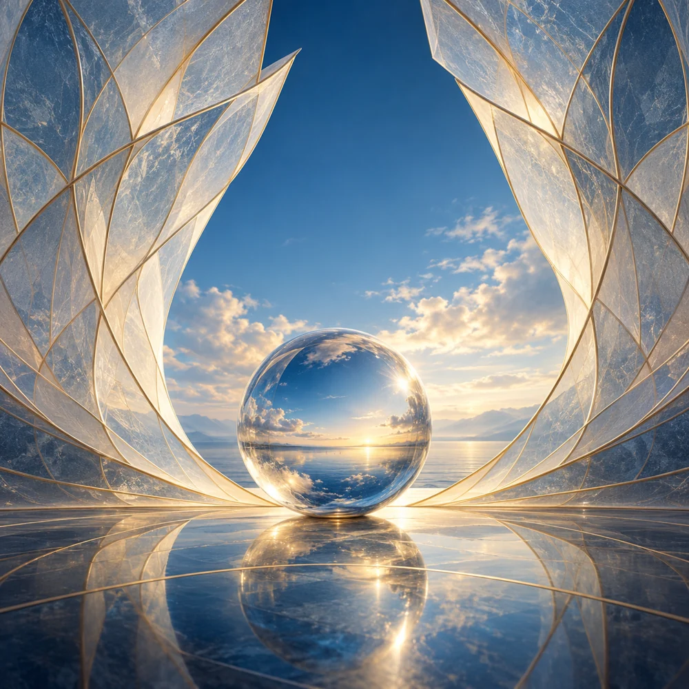
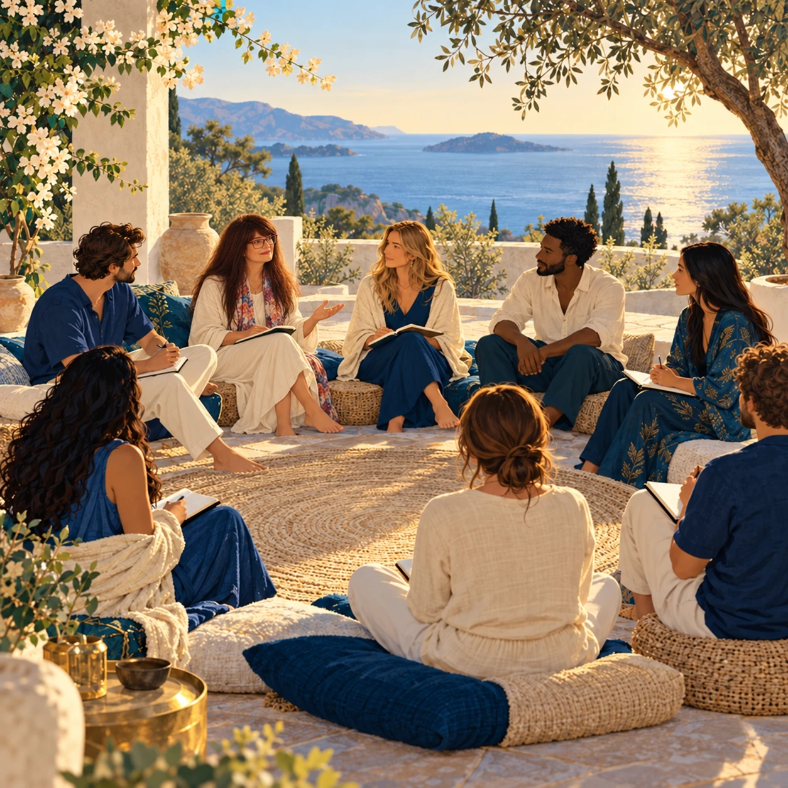

Об Академии · с 1983 года
АССА
Академия СферическогоСознания Альва
Уникальная система знаний, связывающая все процессы и явления в ЕДИНОЕ ЦЕЛОЕ; практики, методики, техники саморегуляции, дающие возможность самовосстановления в любой ситуации, душевное равновесие и уверенность в своем понимании мира.
ИСТОРИЯ И КОНЦЕПЦИЯ
Дорогие друзья, Академия Сферического сознания АЛЬВА, ранее носившая название Школы Самовосстановления, существует с 1983 года, когда была набрана первая исследовательская группа, которая приступила к разработке концепции ПРИРОДОСООБРАЗНОГО МИРОВОЗЗРЕНИЯ и ЦЕЛОСТНОГО подхода к развитию сознания человека на основе УНИВЕРСАЛЬНЫХ ЗАКОНОВ ПРИРОДЫ.
К настоящему времени разработано, создано и проверено на практике большое количество методик, практик, психотехник и медитаций, упражнений и способов восстановления природного потенциала человека, целостности его сознания, единой картины мира, природной мощности и духовных знаний.
ЦЕЛОСТНЫЙ ПОДХОД
В результате деятельности основателей, преподавателей, учителей Академии как проявленных, так и непроявленных (!), создана основа для целостного воспитания и образования жителей нашей планеты, для всех людей, кто почувствовал необходимость восстановления целостности своего сознания, его главной функции – осознавания, единства с реальностью природы, соучастия в осознанном творении нашего мира.
Мы отвечаем практически на любые вопросы о сущности такого уникального явления как Человек, о развитии его сознания, можем содействовать восстановлению любых нарушенных функций его организма, деятельности, к какой бы сфере они не относились, если обратившийся к нам готов сотрудничать с Законами Единой Природы, принимать и осознавать их влияние на свою жизнь, здоровье, отношения, любые другие потенциалы.

ВАШ УЧИТЕЛЬ

ИРИНА ВЛАДИМИРОВНА САВЕЛЬЕВА
Руководитель Школы, ведущий специалист-преподаватель, соавтор методологии и практики целостного подхода восстановления (исцеления) сознания человека, его организма; гармонизации взаимодействия человека с миром, а также решения общественных и социально-экономических проблем на основе природосообразного мировоззрения. С 2001 – частнопрактикующий психолог, аналитик, психотерапевт.
ЧЕМУ МОЖНО НАУЧИТЬСЯ В НАШЕЙ АКАДЕМИИ?
САМОВОССТАНОВЛЕНИЮ!
Человек есть микрокосмос, он обладает всеми необходимыми способностями, функциями, потенциалами для решения любых своих проблем с опорой только на свою внутреннюю природу, свою Душу, получая из внешней – обратную связь о своих решениях и действиях.
Пространство-время
Только в нашей Академии вы можете получить целостное представление о системе координат ПРОСТРАНСТВО-ВРЕМЯ. Ее сущности и структуре.
Закон Структуры
Только в нашей Академии вы можете получить представление о самом Законе Структуры и о том, какое значение он имеет для управления своей судьбой и событиями своего будущего.
Управление событиями будущего
Собственно только в нашей Академии вы можете получить представление об управлении событиями своего будущего. На основании чего это возможно и каким образом это происходит без нарушения Единых Законов Природы и образования кармического или космического долга!

Эго-структура и Матрица
И главное, о чем вы можете узнать в виртуальных стенах нашей Академии – это раскрыть для себя тайну Эго-структуры, сущность Матрицы и как вы к ней подключены, и, разумеется, каким образом выйти из-под ее контроля.
КАК ПРОХОДИТ ОБУЧЕНИЕ

Мы можем проводить индивидуальное обучение. Но индивидуальное обучение не так эффективно в наше время. Обучаясь индивидуально, и даже занимаясь индивидуально на мастерском уровне, человек не может быть гарантирован от повышения своего Эго, то есть более глубокого подключения к Эго-Структуре. Более того, зачастую люди, сами того не осознавая и не понимая, используют индивидуальное обучение для повышения своего Эго. Вот с таким парадоксом мы сталкиваемся сегодня. Эго повышает свою квалификацию в способах нашего порабощения.
Поэтому наша рекомендация однозначна: обучаться только в группах в основных обучающих программах Академии.
Круговое обучение
Мы рекомендуем повышать свой мастерский уровень только в так называемых кругах, то есть работать в глубоких практиках только в Круге вместе с другими учениками. Круговое обучение сейчас только формируется, мы только начали продвигать этот продукт.
В настоящий момент у нас проходят:
- тематические круги;
- Круги, инициированные нашими учениками;
- Мастерские Круги, которые инициируем мы сами.
Если у вас есть желание подключиться к этим практикам и обучению, пожалуйста, обращайтесь индивидуально – либо к Учителю, либо к нашим кураторам.

Продолжить знакомство